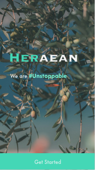
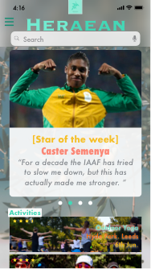
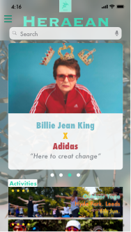
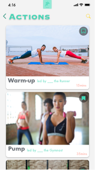
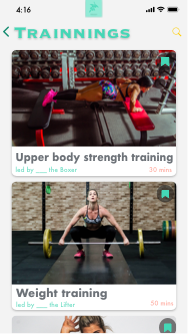
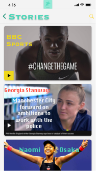
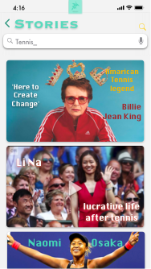
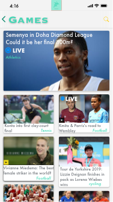

APP
According to our earlier stage research, we find that there is an imbalance in the society that there is more male role model than female role model in sports area, and how important is female role model to appeal more potential female young athletes enroll in professional sports. There are many factors caused why there is a lack of female role models in the society, for instance, television coverage, sports brand, public audience and also the career obstructs faced by female athletes (ex. athletic injuries). We want to create a platform for the public to know more about female sports, which is also a channel for professional female athletes to show their expertise and life, also faces and names to the world. Furthermore, we also included a feature which used to watch more female sports matches, since the media coverage about female sports is relatively low, and we want to satisfy and attract users who are interested in female sports.
In conclusion, we create this app aiming to:
- Raising public awareness of female sports.
- Raising public awareness of female sports.
- Increase the exposure of female athletes and raising the recognition of Female Athletes.
- Encourage women who love sports to participate in exercise.
- Inspire and encourage potential female athletes to participate in professional sports.
- Increase the number of female sports events broadcast
Name: Heraean
This name is originally from the name of ‘Ancient Heraean Games’ in ancient Greece. The ancient Heraean Games were a series of athletic festivals exclusively for women, held in honor of the Greek mythological goddess Hera, which took place every four years and began sometime after the start of the Olympic Games in 776 BC.
Tagline: We are #Unstoppable
We thought a lot of slogans for our app, and at last we choose this one, which is short and strong. We try to deliver that although nowadays the whole condition of female sports is not ideal, female sports will and are getting better. This sentence also designed for the female potential and young athletes and convince them ‘don’t drop out’ and ‘you are unstoppable’
Icon: Olive leaves and branches
We choose olive leaves as our theme icon because at the end of the competitions, the victors of the Heraean Games were awarded with a wreath of olive crowns. Also, the olive branches and leaves have their spiritual symbolism of peace or victory deriving from the customs of ancient Greece. These fresh olive branches have not yet become olive crowns, indicating our hopes for the younger generation and the fact that everyone who is working on the way to the championship deserves respect, the honors are not only for the victors.
Colors Palette:
After referenced a lot of theme colors of gyms and fitness apps, we choose this mint greenish color because it can bring people a fresh feeling, since we don’t want people feel breathless and stressful when they see a dark color on a fitness app. Moreover, green is a neutral color, it’s eye-catching, bright and fun but not aggressive and suitable for various genders. (Although our main target users are female sports lovers, we also welcome other people who interested in female sports.)
Logo
There are three key characteristics of appealing logos: simplicity, recognizability and motivation (Aiello, G. and Parry, K, 2019). Our logo is simply combined with our icon, name and tagline. We try to design our icon olive leaves and branches in a feminine way since our main target users are women. All of them are in our greenish theme color palette.
Font:
Typography can enact interactions and express attitudes to what is being represented, and multimodal, integrated with other semiotic means of expression such as color, texture, three-dimensionality, and movement. (Theo van Leeuwen, 2006). We use Copperplate Gothic font in our log in page and menu page, for our name and features, since Copperplate Gothic is in capitals only, which is useful to highlight. It is also expanded, wide and less curvature, make users feel stretch, relax and peaceful. We use Futura Fonts for the main contexts in the app, which is curvier, more harmonious in different pages and more suitable for people to read.
We are non-profit.
We will cooperate with sports brands, find sponsors for our off-line activities, all of sponsorship fee that we got will give to the organizations, charities and foundations which are aiming to help supporting female sports. Meanwhile, to support our app operation, helping us to improve users’ experiences.
App Direction
Tagline: We are #Unstoppable

This is the first page showed on the screen. We separated Heraean into ‘HER’+’AEAN’, and highlight ‘Her ’because we try to support female sports. We use a hashtag sign in our tagline as it’s more eye-catching and useful for our PR promo campaign on social media. We used olive branches as the background, to link the connotation of our icon.
Home page

These are our home pages, we will select some newest or popular stories, news and also competitions on the home page on the scrolling board. ‘Activities’ will show sports activities nearby, according to the location of our user.
Actions and Trainings

Users can follow the sports tutorials on APP to learn sports knowledge and actions, which are demonstrated by professional female athletes. Both Actions and Training features are exercise guidance led by professional female athletes. The difference is, the Actions is for non-prof sports lovers, and Trainings is for professionals or user who want to be professional athletes. For users, this will be a platform to learn more about sports and exercises; for female athletes, this will be a platform to shout out for themselves; for our sponsor sports brands, they can use their endorsers as the leaders of our features, which could be a platform to publicize.
Stories

Female athlete can share the stories of their professional life, training and career to the user in our stories feature. It helps the user get more understand of the life being a female athlete, can make public pay more attention on female athlete and can help young sports engagers who is not sure whether being a professional athlete in their future life to know more about this occupation. Publish the professional stories and sharing of female athletes (both of who have been retired and in active athletes. We’ll also hire writers and journalist to write special reports of female athletes.
Games

Since the media coverage about female sports is relatively low on television, we want to create an online media channel to show both livestreaming of female sports and classic female sports games in the past.